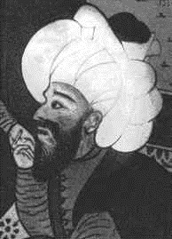

Welcome to the Mathematical World!
Ali Qushji
Astronomer, Mathematician, and Philosopher of the Timurid and Ottoman Eras
Ali Qushji (c. 1403 – 1474 CE), full name Ala al-Dīn Ali ibn Muhammed al-Qushji, was a prominent astronomer, mathematician, physicist, and theologian of Central Asian origin. Born in Samarkand in present-day Uzbekistan, he studied under the famed astronomer Ulugh Beg and later worked in Constantinople (Istanbul) under Sultan Mehmed II. Qushji is notable for advancing observational astronomy, mathematical astronomy, and scientific philosophy during the late Islamic Golden Age.
Ali Qushji played a central role in developing the astronomical school of Samarkand, building on the works of earlier scholars such as Nasir al-Din al-Tusi. He was responsible for refining astronomical models based on observations made at the Ulugh Beg Observatory, one of the most advanced observatories of its time. His significant work al-Risāla al-Fatḥiyya on theoretical astronomy outlined planetary models and calculations that were free from the philosophical and cosmological assumptions typically associated with Aristotelian physics.
In mathematics, Ali Qushji focused on mathematical astronomy and trigonometry. He contributed to calculations involving celestial movements, particularly lunar and planetary motions, and supported the use of empirical data over inherited theoretical assumptions. He further developed spherical trigonometry and improved the accuracy of astronomical tables used to predict planetary positions.
One of Ali Qushji’s most significant philosophical contributions was his argument for the possibility of Earth's motion — he challenged the long-standing Aristotelian notion that Earth must be stationary. Though he did not claim that the Earth moves, his empirical approach to science left open the theoretical possibility, marking a step toward the later Copernican revolution.
- Studied under Ulugh Beg and helped establish the Samarkand school of astronomy
- Proposed planetary models with refined astronomical calculations
- Separated astronomy from Aristotelian cosmology, supporting empirical methods
- Considered the possibility of Earth's motion based on observational reasoning
After the death of Ulugh Beg, Qushji migrated to the Ottoman Empire, where he taught at the Madrasah of Ayasofya in Istanbul and influenced Ottoman scientific thought. His works were translated into Persian and Turkish and circulated widely, influencing scholars well into the modern era. Ali Qushji stands as a bridge between classical Islamic science and the scientific developments that would later shape the Renaissance and early modern astronomy.